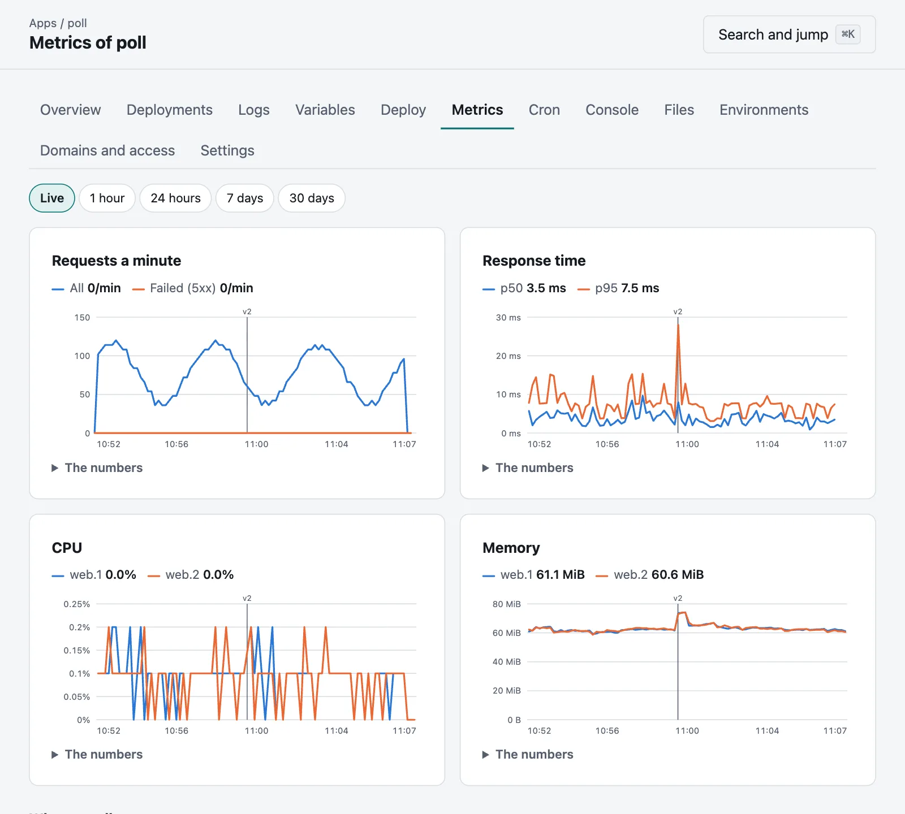
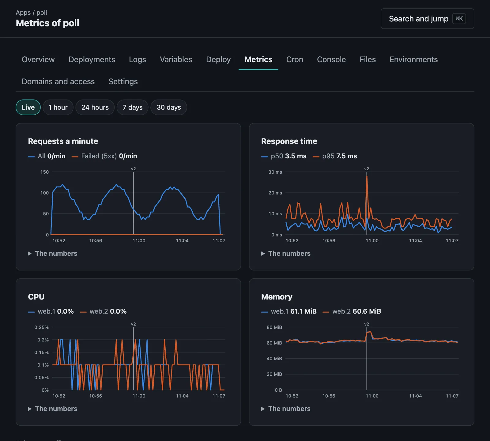

Metrics
Requests, response times, CPU and memory, in the console and for Prometheus.
Moorage keeps what your apps have been doing, with nothing else to run. An app's Metrics tab has it as charts, for each environment; The last hour on its page has it at a glance; and the list of apps has each one's requests.


| Chart | What it is |
|---|---|
| Requests a minute | All requests, and those the app or Moorage failed (5xx). |
| Response time | How long 50% and 95% of them took, from when Moorage got them to when they ended. |
| CPU | By instance, in percent of one core, so that a process using two whole cores is at 200%. |
| Memory | By instance, and whatever each started. |
Each release is marked with its version on every chart, so that what changed lines up with what was deployed. Hold the pointer over a chart for its numbers, or tab to it and use the arrow keys. The numbers under each has them as a table, and every range works with no scripts at all.
Only requests that got through a gate are counted. A connection held open as a WebSocket counts as a request, not as a response time.
How long it is kept#
| Every | For | |
|---|---|---|
| In memory | 10 seconds | 2 hours |
| In the database | Minute | 14 days |
| In the database | Hour | 1 year |
A restart of the server loses what was in memory, which is at most the current minute's worth that had not been written. Percentiles stay right as they roll up, since it is histograms that are kept, and not averages of averages. A busy environment with two instances takes about 6 MB of database, all told.
From the command line#
moor metricsmoor metrics --range 24h --series latencymoor metrics --env staging --json--range is live, 1h, 24h, 7d or 30d.
With Prometheus#
The console's hostname answers at /metrics, with an API token that can read. It says only what the token's holder could see anyway, and what is of the server itself only to an administrator.
moor tokens create prometheus --scope readscrape_configs:
- job_name: moorage
scheme: https
authorization:
credentials_file: /etc/prometheus/moorage-token
static_configs:
- targets: [moorage.apps.example.com]| Metric | |
|---|---|
moorage_http_requests_total | Requests, by app, env and status class |
moorage_http_response_bytes_total | Bytes sent in answers |
moorage_http_requests_in_flight | Requests going on now |
moorage_http_request_duration_seconds | A histogram of how long they took |
moorage_instance_cpu_percent | By instance_name, such as web.1, and process |
moorage_instance_memory_bytes | The same. A service is one too, with an instance_name such as service.db |
moorage_host_load, moorage_host_memory_used_bytes, moorage_host_disk_used_percent | The server itself |
Counts start again when the server does, as Prometheus expects of counters.
How it is measured#
On Linux and macOS, an instance's usage is added up over its process and all that descend from it. Containers' usage comes from their engine. On Windows it is the same with what the system says of processes, and the server's load has no number there.